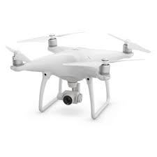

Phantom 4
Le DJI Phantom 4 est le nouveau drone référence de la marque DJI. Véritable évolution du Phantom 3, le DJI Phantom 4 intègre des toutes nouvelles fonctions, et plus particulièrement un nouveau système d'évitement d'obstacles qui se montrera redoutable. Le mode Visual Tracking vous permettra d'effectuer un Follow-Me sur une cible directement choisie depuis votre tablette, et cela sans module GPS. Le FlyTap vous permettra, lui, de piloter votre drone directement depuis votre tablette en indiquant au Phantom 4 un point où aller.
Pour utiliser le drone, vous devez utiliser une application spécifique permettant de le télécommander.
Pour ce faire deux options s'offrent à vous: vous pouvez aller dans le rubrique "installer", une rubrique spécialement dédié à la présentation de notre application, et cliquer sur le lien pour télécharger notre application ou bien veuiller cliquez sur un des liens ci-dessous pour télécharger directement l'application.(le deuxième lien permet de télécharger directement l'appli tandis que le premier vous emmène sur notre app store)
- Télécharger via l'app store:
- Cliquez ici
- Télécharger pour Android:
- Cliquez ici